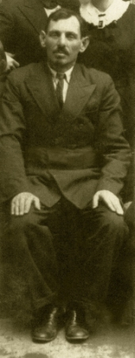
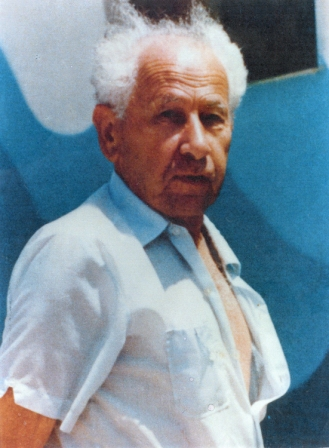

Yizhak Greenshtein
Chairman of Community Comity of Turisk
 Yizhak (Iche) was born in Turisk in 1882 to his parents Idul and Riva-leah. A six children family Yizhak among the youngest. His Father Idul was a man of the world,and a businessman, wandering to South America, Europe, and many other countries. When he came back toTurisk, and settled down, it provided him Respect of the Turiscians, Jews and others. Two of his sons left For South America, but Yizhak, who was very talented , started a successful food business, became partner of the big flour mill, and other business. He married Ester,and they gave birth to seven children. Yizhak was among the first youngsters who initiated the erecting of the "Tarbut" school, the Hebrew library, and all his children attendet and studiet there. His branchet out busines brought him wide influence among the community members, specially among the masses of craftsman, handiwork Jewihs people, who were the majority in Turisk. He became the most important arbitrator and honest broker to them. This position contributed in the elections as the chairman of the community comity. He was elected three times, He enjoyed exelent relations with polish authorities, for the benefit of the community and the people. He was happy, four of his children managed to leave for Palestine in time. He shared the fate of all the Jews of Turisk in September 1942.
Neta Wainer
Head of the community of Turisk
 Neta Wainer was born in Turisk in 1882 to his father Yeshaayahu and mother Reisel. His grandfather was one
Of the gabbai,s in the "Magids court".He ovned a small brick factory, for his living. His father Yeshaayahu took to the factory managing,there were "rumors" that He is not a
Hassid any more. Neta went to the "heider", continued studies at the Yeshiva of Lublin and graduated as "Rav." When his father passed avay Neta returned home, to manage the bricks factory. While home he joined a group of youngsters,Yeshiva graduated, influenced by the Zionist and progressive ideas, aspirations to modernize the community life. When getting married in 1909 Neta with the others initiated the errection of a school for Jewish children with teaching languages :Hebrew and Yiddish. The orthodox leaders proclaimed a boycott on them,they were forced to build a new "Zionist " Synagogue. This was how he started his social activity.
After the Polish occupation, the "Kehila"reorganized and
In 1924 he was elected head of the "Kehila,"and served with intervals three terms. He was the initiator of the idea to join the "Tarbut" Zionist school net, to impose the Zionist upbringing, the founding of the Hebrew library.
During years he supported financially the Hebrew school.
During years Neta was among the organizing the social activities in the "Kehila."In the beginning of the thirties the bricks factory was burned down, with no chance to restore
the factory.The six Wainer children who spoke Hebrew, and were members in Hashomer Hazair and dreamed to
immigrate to Palestine, all beside one of them remained in
Turisk. Neta Wainer his wife Pessia ,daughter shoshana and the two youngest sons Simon and Pesach were killed
In the Holocoust in 1942 together with all 5500 Turiscians.
Neta Wainer was born in Turisk in 1882 to his father Yeshaayahu and mother Reisel. His grandfather was one
Of the gabbai,s in the "Magids court".He ovned a small brick factory, for his living. His father Yeshaayahu took to the factory managing,there were "rumors" that He is not a
Hassid any more. Neta went to the "heider", continued studies at the Yeshiva of Lublin and graduated as "Rav." When his father passed avay Neta returned home, to manage the bricks factory. While home he joined a group of youngsters,Yeshiva graduated, influenced by the Zionist and progressive ideas, aspirations to modernize the community life. When getting married in 1909 Neta with the others initiated the errection of a school for Jewish children with teaching languages :Hebrew and Yiddish. The orthodox leaders proclaimed a boycott on them,they were forced to build a new "Zionist " Synagogue. This was how he started his social activity.
After the Polish occupation, the "Kehila"reorganized and
In 1924 he was elected head of the "Kehila,"and served with intervals three terms. He was the initiator of the idea to join the "Tarbut" Zionist school net, to impose the Zionist upbringing, the founding of the Hebrew library.
During years he supported financially the Hebrew school.
During years Neta was among the organizing the social activities in the "Kehila."In the beginning of the thirties the bricks factory was burned down, with no chance to restore
the factory.The six Wainer children who spoke Hebrew, and were members in Hashomer Hazair and dreamed to
immigrate to Palestine, all beside one of them remained in
Turisk. Neta Wainer his wife Pessia ,daughter shoshana and the two youngest sons Simon and Pesach were killed
In the Holocoust in 1942 together with all 5500 Turiscians.
Avraham Shiye Bar
Chief slaughterer in the Shtetl Turisk
 Avraham Shiye was born in 1881 in Turisk. He was the son of
Of a slaughterer family in generations.His father Pinie(Pinhas)
Was a slaughterer in Turisk when his father passed away. Avraham Shtye attendet the yeshiva in Turisk, specialized in the trade, and moved to the Shtetl Kashyvki. He married Hana of Torchen. Than he was given the Job of slaughterer in the city Kostopol. There he served several years, until asked to accept the job in Turisk. Avraham Shiye was an orthodox Jew.
In spite of it he did not prevent his sons and daughter to be active in the Zionist and Hashomer Hazahir organizations.
During the years of Soviet rule, who hated Zionism, his house
Became the center of the Zionists underground, His wife Hana,
Cooperated with the underground.
They were killed in September 1942 while sharing the fate of all the Jewish community of Turisk.
Avraham Shiye was born in 1881 in Turisk. He was the son of
Of a slaughterer family in generations.His father Pinie(Pinhas)
Was a slaughterer in Turisk when his father passed away. Avraham Shtye attendet the yeshiva in Turisk, specialized in the trade, and moved to the Shtetl Kashyvki. He married Hana of Torchen. Than he was given the Job of slaughterer in the city Kostopol. There he served several years, until asked to accept the job in Turisk. Avraham Shiye was an orthodox Jew.
In spite of it he did not prevent his sons and daughter to be active in the Zionist and Hashomer Hazahir organizations.
During the years of Soviet rule, who hated Zionism, his house
Became the center of the Zionists underground, His wife Hana,
Cooperated with the underground.
They were killed in September 1942 while sharing the fate of all the Jewish community of Turisk.
Yeshayahu (Shayke) Wainer
From Shtetl Turisk to a Leader of Hashomer Hatzair
 Yeshayahu Wainer was born in Turisk in 1912. The members of the Wainer family were: the father Neta, the mother Pesia, one daughter Reisele, and four sons, Moshe, Ben-Zion, Shimon and Pesach. The parents were religious, but liberal people.
Before the First World War in 1910 the young industrialist Neta Wainer together with some other young Jews founded a Yiddish and Hebrew school. Shayke was among the first to attend a school that was not a traditional cheider. When he graduated he
entered the "Tarbut" Hebrew high school in the neighboring town
Kovel. Kovel was an active Zionist Center. Several Zionist youth
Movements such as, the Hashomer Hatzair, Hahalutz, Beitar and others called
people to join the movements to immigrate to Palestine.
Yeshayahu Wainer was born in Turisk in 1912. The members of the Wainer family were: the father Neta, the mother Pesia, one daughter Reisele, and four sons, Moshe, Ben-Zion, Shimon and Pesach. The parents were religious, but liberal people.
Before the First World War in 1910 the young industrialist Neta Wainer together with some other young Jews founded a Yiddish and Hebrew school. Shayke was among the first to attend a school that was not a traditional cheider. When he graduated he
entered the "Tarbut" Hebrew high school in the neighboring town
Kovel. Kovel was an active Zionist Center. Several Zionist youth
Movements such as, the Hashomer Hatzair, Hahalutz, Beitar and others called
people to join the movements to immigrate to Palestine.
Shayke joined the Hashomer Hatzair movement together with many other students and became a leading figure in the movement. When he was home during vacation he managed to organize the pupils of the Tarbut school in a self-styled "Nest" of the Hashomer Hatzair organization. Soon it became the largest youth organization inTurisk. Shayke was very active in the region Groups were organized in the large cities. They trained themselves to became workers in factories, agriculture, and other trades in order to prepare to be Pioneers and members of Kibbutzim in Eretz Israel.
When Shayke graduated he returned home and waited for a new group which was being established in order to join them. Meanwhile he was the leader of the Nest in Turisk. In the meantime he started teaching in the "Tarbut" school, which lasted for almost two years. Then he joined his "Achshara" or training group. After several months he was sent to the headquarters of Hashomer Hatzair in Warsaw. He visited the Achshara groups all over Poland on behalf of the movement headquarters helping to choose the people most suited for the difficult journey and conditions on the Kibbutzim in Israel. During this period he was acquainted with thousands of members in the movement and well-known among the Zionist and Bund activists in Poland.
The British authorities denied immigration certificates for most of those trying to enter Palestine. Shayke was among the Pioneers of the illegal immigration. He organized train convoys with hundreds of "Pioneers" from Poland, Italy, and Romania to board small ships for the difficult journey. Shayke escorted the convoys and was like a father to them as he listened to their problems trying to solve some of the problems. He continued this work for over two years.
In 1939 Shayke was elected as the only Delegate of Hashomer- Hatzair to the Zionist Congress in Switzerland. He left Warsaw a week before Germany invaded Poland and while attending the Congressional discussions for eight days the war started. All the delegates rented a boat and sailed for Palestine but Shayke and two other Youth delegates decided to return to Warsaw and remain with the movement in the hard times as Warsaw was under siege and thousands were killed or wounded. The Polish authorities ordered all the young people to leave Warsaw.
All the members of the "Hanhaga" (management) headquarters who stayed in Warsaw recruited hundreds of activists and started the heavy bombarded toward the new Russian border. They walked for two weeks under bombardments, but when crossing the Russian border new problems arose. The N.K.W.D. was chasing Zionists and arresting many of them so they stayed in hiding when Russia turned over the Vilna region to Lithuania. It was their chance to move toward Palestine. Shayke and the leading group went secretly to Vilnius. Almost all the leaders and activists of the Zionist parties in Poland were there numbering about three thousand with a thousand Hashomer Hatzair activists. The leadership decided to send a group of very able and experienced activists to the Warsaw Ghetto. Shayke volunteered for this mission but this time the leadership refused his request. Mordechai Anielevich and Yosef Kaplan and several other activists were sent instead. The leadership started sending people to Palestine with false documents. Several hundreds made it and Shayke was among them. He arrived in Palestine at the end of 1940. He went to live In Kibbutz Messilot with his original "Hahshara" group from Poland.
At Kibbutz Messilot he met Hannah and several months later they married and settled in Kibbutz Ein Hashofet.
When Germany invaded Russia many of those who remained in Vilna escaped to the Russian army and eastern Republic of Russia. Shayke was knocking on every door in an attempt to convince the Kibbutz leadership to hurry and save the members in located in the Asian Republics.
Shayhke left his new wife and volunteered to join a working brigade to Teheran. There he succeeded in making contact with many activists who survived with victims. He managed to convince the "Joint" Fund to support the efforts and help the refugees in eastern Russia. Thousands of food parcels were sent to them. After the war most they spoke of their gratitude as those the parcels saved their lives. After the Teheran mission Shayke returned to the family and Kibbutz. He began teaching in the Kibbutz school while enjoying his family life. When the end of the war was near Shayke was asked by the "Hagana" to secretly leave the country for Poland to meet and organize the returning Jews who started to leave Russia for Poland. Many of them were surprised to see him again and they joined together in organizing the masses of refugees starting the march to Eretz Israel.
Once again he was among the organizers of the "Exodus" of Jews from all over Europe to Eretz Israel. Hundred of thousands of Jews on their way, in spite of the British Empire attempts to stop them. Back in Israel Shayke was called again to join the leading central members of the Hashomer Hatzair abroad and became the secretary of the management of the Hashomer Hatzair World Organization.
After finishing the mission Shayke was appointed envoy and leader of the organization in Argentina. He succeeded and lived there four years (with his family). After a short time in the Kibbutz he was appointed as diplomatic envoy in Argentina regarding- "To let the Soviet Jews Go. Shayke was soon well known in the intellectual and leading circles of Argentina and many South American Countries. His activities were valued by all those whom he worked with
After two years of exhausting activity Shayke fall very sick. He was forced to stop all of his activities and returned home and after several months he passed away.
Yaacov Sheaps
A central activist of Kibutz Hameuchad.
 Yaacov Sheaps the son of Golda and Michael Sheaps was born Turisk in 1910. The were a wealthy family,owned a small factory To extract flax oil and to produce flax linen and animal food of olive peel. They raised five children. The family was religious traditional, but not Hassidic, as most of the Turiscians. The spoken language at home, was Yiddish. All the children attendet The "Tarbut" school, where the teaching language was Hebrew. Yaacov attendethe Heider then high school. The hachshara movement influenced the high school pupils, While in the 11th grade at the age of 17teen, together with his best friend left school to join the Klossova Hachshara point. It was a very hard stone quarry, he suffered of hunger, sicknesses, the quarry was a primitive plant. And human losses. But Yaacov remained three years. In 1930 they left for Palestine, joined Kibutz Givat Hashlosha, the center for all the Klossova Olim. He worked in agriculture, in 1933 Yaacov became the first truck driver of the Kibutz until mobilized to became an officer in the British polis Force. After graduating the polis school in Jerusalem, was appo- Inted to serve as policman-rider in Hadera. It was the beginning of the bloody riots of 1936. In 1937 Yaacov was nominated as accompanist to prof. Hayim Waizman, president of the world Zionist movement. With H. Waizman Yaacov participated the Zionist congres in Basel, in year 1939 before the war. Back in Palestine, he married his Hadera girl friend Dora,together they Joined and became members of Kibutz Givat Hayim. He became menaging director of the transportation Cooperative, Emek- Hefer, one of the first and largest transportarion cooperatives in Israel. After several years of service he was called to join the management of the building company of Hakibutz Hameuhad and Solel Boneh. And lead the giant swing of building in the Kibutzim. When Dora passed away Yaacov returned home, trying to work, he fall sick, and died in 15.9.90.
Hershel Sthearb
A social and culture activist
 Hershel Sthearb the eldest son to his father Sucher and mother Hana Sthearb, was born in Turisk in 23/12/1915. a family of seven
Children. The father was a tailor and well supported his family. He
was a taylor who provided ready made cloth. The family was religious but not orthodox. The father was among the first parents
to send his children to the "Zisho"school. Hershel like all Jewish kids atendet the Heyder. He was very talented and arouse expectations when graduating continued study while working
in his fathers workshop. He became socially involved and very active culturally among the youth of the Bund. His vigorous activities arouse by bad mitake suspicions of illegal anti Polish
activities. Hershel was arrested and sentenced to many years of prison. He was sent to the worsiest concentration camp"kartusa-
Bereska." There he was given to tortures, hunger and diseases. In September 1939 when the Nazis invaded Poland, he was freed and returned home very sick. When the Red Army took Turisk
Hershel became again active , but the good times did not last long. In june 1941 the Nazis attacked Russia, the defeated Red Army retreated, and masses of citizens followed..
The father Sucher bought two horses with a cart,all the family some other Turitians with them started the long and terrible march
to the east. Day and night the Germans bombarded the ways, many were dead and wounded, no food and sickness, the horses
could not continue, they walked and found a human who allowed
them to join the train,till arriving to a kolkhoz in Uzbekistan. The
family stayed there till the end of the War. Hershel survived very ill.
When the war finished, Hershel with united family left for Poland.
From there they immigrated to Israel. Hershel could not integrate and went with his wife and children to U.S.A. There he
lived until the last day of his life. According to His last wish, His family brought his body to Israel. He was buried in the Moshav
Kfar Boruch.
Hershel Sthearb the eldest son to his father Sucher and mother Hana Sthearb, was born in Turisk in 23/12/1915. a family of seven
Children. The father was a tailor and well supported his family. He
was a taylor who provided ready made cloth. The family was religious but not orthodox. The father was among the first parents
to send his children to the "Zisho"school. Hershel like all Jewish kids atendet the Heyder. He was very talented and arouse expectations when graduating continued study while working
in his fathers workshop. He became socially involved and very active culturally among the youth of the Bund. His vigorous activities arouse by bad mitake suspicions of illegal anti Polish
activities. Hershel was arrested and sentenced to many years of prison. He was sent to the worsiest concentration camp"kartusa-
Bereska." There he was given to tortures, hunger and diseases. In September 1939 when the Nazis invaded Poland, he was freed and returned home very sick. When the Red Army took Turisk
Hershel became again active , but the good times did not last long. In june 1941 the Nazis attacked Russia, the defeated Red Army retreated, and masses of citizens followed..
The father Sucher bought two horses with a cart,all the family some other Turitians with them started the long and terrible march
to the east. Day and night the Germans bombarded the ways, many were dead and wounded, no food and sickness, the horses
could not continue, they walked and found a human who allowed
them to join the train,till arriving to a kolkhoz in Uzbekistan. The
family stayed there till the end of the War. Hershel survived very ill.
When the war finished, Hershel with united family left for Poland.
From there they immigrated to Israel. Hershel could not integrate and went with his wife and children to U.S.A. There he
lived until the last day of his life. According to His last wish, His family brought his body to Israel. He was buried in the Moshav
Kfar Boruch.
Eehezkel Zummerblit
 Was born in Turisk in 1921. His parents- father David his mother Reizel' were a laboriously family. His father was a high
Skilled builder. His mother was a seamstress, and instructor of
The trade, to young girls.
As a child Yehezkel attendet the heider and then became a student to the "Zisha" Yiddish school. After graduating became apprentice and worker, joined the Jordan group of Hashomer-
Hazair, and was very active. Several monthes after the Russian occupation he was mobilized to the Red Army. Since
The first days of the Nazi invasion he was fighting on the front.
Was born in Turisk in 1921. His parents- father David his mother Reizel' were a laboriously family. His father was a high
Skilled builder. His mother was a seamstress, and instructor of
The trade, to young girls.
As a child Yehezkel attendet the heider and then became a student to the "Zisha" Yiddish school. After graduating became apprentice and worker, joined the Jordan group of Hashomer-
Hazair, and was very active. Several monthes after the Russian occupation he was mobilized to the Red Army. Since
The first days of the Nazi invasion he was fighting on the front.
 He was heavy wounded, more than six months in hospital
While still wounded, returned to the unit on the front, continued
Fighting until the Victory day. He was decorated with several marks of distinction, among them, the important Red Star.
When the war finished he immigrated to Palestine and became member of the Moshav Kfar Baruh. He was a farmer, he loved the trade, and lived there with his family, wife, two sons and daughter till his death in 1991. His son Shmulik dyied while serving in ZaHAL.
He was heavy wounded, more than six months in hospital
While still wounded, returned to the unit on the front, continued
Fighting until the Victory day. He was decorated with several marks of distinction, among them, the important Red Star.
When the war finished he immigrated to Palestine and became member of the Moshav Kfar Baruh. He was a farmer, he loved the trade, and lived there with his family, wife, two sons and daughter till his death in 1991. His son Shmulik dyied while serving in ZaHAL.
Yaacov Shcherb
A central activist of Kibutz Hameuchad.
 Yaacob was born in Turisk in 1920, by his parents Yesoscher and
Mother Chaya. His father owned a tailors shope, and was a well known specialist in the trade. All the family was engaged in production and enabled a reasonable living. They were a family of
five children, while the oldest son Joined the underground Communist party, all the children attendet the Yiddish "Zishool".
When Yaacob graduated, he began to study the family trade, and
Joined the Hashomer Hazair, to 'kvuzat "Jarden". He soon became very active and one of the best members. When the Soviet union occupaied Turisk, he joined the underground of the
Hashomer Hazair groups. After several months he was mobilized
to the Red Army. When the Nazis invaded Russia, he was moved
to the Leningrad front under siege. He fought for more then four
years, was heavily wounded, remained there, in very hard sanitary conditions, poor medical assistance, lived through terrible
war experiences. Was moved to the rear, there, he joined his family in refuge. When the war finished he moved back to Poland,
Germany and came to Israel. He married and gave rise to three children. All the years he suffered of many illnysses, he remained
Handicapped. He passed away in 2006.
Yaacob was born in Turisk in 1920, by his parents Yesoscher and
Mother Chaya. His father owned a tailors shope, and was a well known specialist in the trade. All the family was engaged in production and enabled a reasonable living. They were a family of
five children, while the oldest son Joined the underground Communist party, all the children attendet the Yiddish "Zishool".
When Yaacob graduated, he began to study the family trade, and
Joined the Hashomer Hazair, to 'kvuzat "Jarden". He soon became very active and one of the best members. When the Soviet union occupaied Turisk, he joined the underground of the
Hashomer Hazair groups. After several months he was mobilized
to the Red Army. When the Nazis invaded Russia, he was moved
to the Leningrad front under siege. He fought for more then four
years, was heavily wounded, remained there, in very hard sanitary conditions, poor medical assistance, lived through terrible
war experiences. Was moved to the rear, there, he joined his family in refuge. When the war finished he moved back to Poland,
Germany and came to Israel. He married and gave rise to three children. All the years he suffered of many illnysses, he remained
Handicapped. He passed away in 2006.